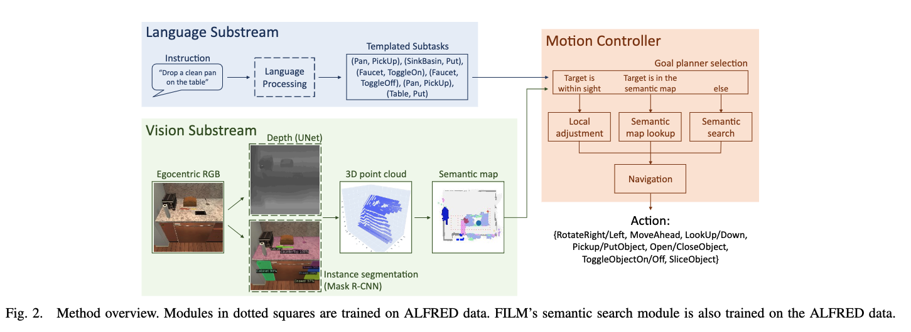
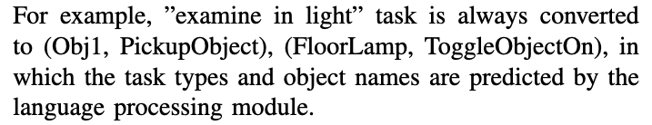
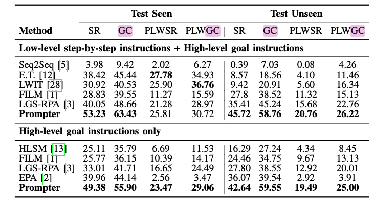
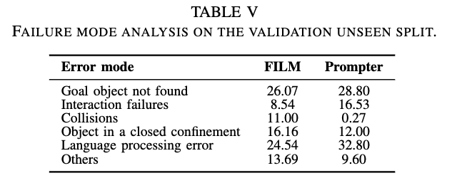
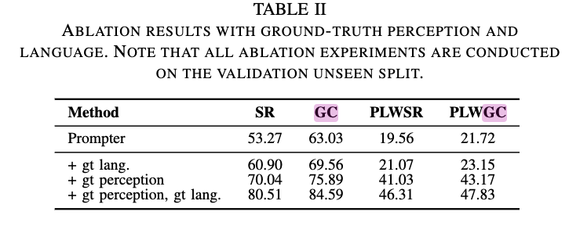

[TOC]
- Title: Prompter: Utilizing Large Language Model Prompting for a Data Efficient Embodied Instruction Following
- Author: Yuki Inoue et. al.
- Publish Year: 7 Nov 2022
- Review Date: Wed, Feb 1, 2023
- url: https://arxiv.org/pdf/2211.03267.pdf
Summary of paper

Motivation
- we propose FILM++ which extends the existing work FILM with modifications that do not require extra data.
- furthermore, we propose Prompter, which replace FILM++’s semantic search module with language model prompting.
- no training is needed for our prompting based implementation while achieving better or least comparable performance.
Contribution
- FILM++ to fill the role of the data efficient baseline.
- we propose Prompter, which replaces the semantic search module of FILM++ with language prompting, making it even more data efficient.
Some key terms
Difficulty in converting language into robot controls
- Converting free-form language instructions to step-by-step robot controls is no easy task, as agents must integrate information of multiple modalities while operating in environments full of uncertainties.
- it is important to minimise the data cost needed to train an agent, to ease the transition from sim to real.
Function of the semantic search module
- The semantic search module promotes efficient search by predicting the probable locations of the unobserved objects from the observed ones.
Related work
early attempts on ALFRED
- early attempts on ALFRED trained single end-to-end models.=
modular approaches
- most equipped with front-end vision and language modules that process raw inputs which are then integrated in the back-end decision making module.
FILM baseline
language substream
- the language substream subdivides the language instructions into a series of object-action pairs, which serve as subtasks that agents follow to complete the task in divide-and-conquer manner.
- an object-action pair (Faucet, ToggleObjectOn) corresponds to first finding a faucet and then turning the knob.

ALFRED settings
reachable distance
- In ALFRED, an object is considered reachable if its horizontal displacement from the agent is less than 1.5 meters.
- FILM directly uses the depth estimation to determine the reachability.
interaction offset
- being too close to an object can also be a source of error. this is especially true when objects change shape after interaction.
- so some model manually set offset of agent from the object by 50 cm for the OpenObject action, as it is the only deforming interaction in ALFRED
Slice replay
- FILM++ also manually set a macro action sequence to put away the knife and return for a pick up.
Look around
- FILM++ instructs the agent to look around the environment at the beginning of an episode, to promote information gathering
Obstacle enlargement
- a common practice during collision-free path planning is to enlarge the obstacles by the size of of the agent so that the agent can be modelled as a point. (in the semantic map)
Result



- this shows that if having ground truth language parser, the performance will increase by 7% – meaning that there is the potential to improve current language parser.
highlight about the error modes
- the table shows that over half of Prompter’s errors correspond to “Goal object not found” or “Language processing error”
- Prompter is particularly bad at recognising small objects such as salt shakers, and large objects that are difficult to recognise up close, such as refrigerators and floor lamps.